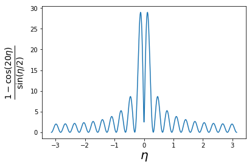

Elastic Chain
\DeclareMathOperator{\tr}{tr} \DeclareMathOperator{\E}{\mathbb{E}}
The Elastic Chain
Simple model of quantum solid
Quantum fluctuations change character of crystalline order
The career of a young theoretical physicist consists of treating the harmonic oscillator in ever-increasing levels of abstraction
Hamiltonian

H = \sum_{j=1}^N \left[\frac{p_j^2}{2m} + \frac{k}{2} (u_j-u_{j+1})^2 \right].
Identify u_j=u_{N+j}
Let’s look at the classical system first
Equations of Motion
m \ddot u_j = k(u_{j-1} + u_{j+1} - 2u_j).
- Look for oscillatory solutions u_j(t) = u_j e^{-i\omega t}
-\omega^2 \begin{pmatrix} u_1 \\ u_2 \\ \cdots \\ u_{N-1}\\ u_N \end{pmatrix} = \frac{k}{m} \begin{pmatrix} -2 & 1 & 0 & \cdots & 1 \\ 1 & -2 & 1 & \cdots & 0\\ \cdots & \cdots & \cdots & \cdots & \cdots \\ 0 & \cdot & 1 & -2 & 1\\ 1 & 0 & \cdots & 1 & -2 \end{pmatrix} \begin{pmatrix} u_1 \\ u_2 \\ \cdots \\ u_{N-1}\\ u_N \end{pmatrix} - Eigenvectors given by plane waves u_j = (z_n)^j, where z_n z_n = \exp\left(\frac{2\pi i n}{N}\right),\qquad n = 0,\ldots, N-1
- Let’s take N odd and index z_n using positive and negative
z_n = \exp\left(\frac{2\pi i n}{N}\right),\qquad n = -(N-1)/2,\ldots, (N-1)/2.
- Write \eta_n\equiv \frac{2\pi n}{N}, so that eigenstates are u_j=\exp(i\eta_n j)
Check
By substituting into the equation of motion show that the dispersion relation is \omega(\eta) = \sqrt{\frac{4k}{m}}\left|\sin\eta/2\right|
Dispersion
\omega(\eta) = \sqrt{\frac{4k}{m}}\left|\sin\eta/2\right|
- \omega(\eta)\to 0 as \eta\to 0. \eta=0 mode corresponds to translation
- At small \eta dispersion is linear, as we expect for sound waves
General solution
Expressed as superposition of normal modes u_j(t) = \frac{1}{\sqrt{N}}\sum_{|n| \leq (N-1)/2} q_n(t) e^{i\eta_n j}
Important q_{-n}=q^*_n ensures that u_j is real
Time dependence q_n(t) = \alpha_n e^{-i\omega(\eta_n) t} + \beta_n e^{i\omega(\eta_n) t}
q_0(t) = \sqrt{N}(X+Vt) describes the motion of the centre of mass
Hamiltonian formulation
Write momenta in terms of Fourier modes p_j(t) = \frac{1}{\sqrt{N}}\sum_{|n| \leq (N-1)/2} \pi_n(t) e^{-i\eta_n j}
Note change of sign in exponent! If u_j, p_j are canonical variables \{u_j, p_k\}=\delta_{jk}, then \{q_m,\pi_n\}=\delta_{mn}.
Check
Show that in terms of the Fourier modes H = \sum_{|n| \leq (N-1)/2} \left[\frac{1}{2m}\pi_n \pi_{-n} + k (1-\cos \eta_n) q_n q_{-n}\right].
\begin{aligned} T = \sum_{j=1}^N \frac{p_j^2}{2m} = \frac{1}{2mN}\sum_{j=1}^N\left(\sum_{|n| \leq (N-1)/2} \sum_{|m| \leq (N-1)/2}\pi_n e^{-i\eta_n j} \pi_m e^{-i\eta_m j}\right) \end{aligned}
- Key idea
\sum_{j=1}^N e^{-i(\eta_n+\eta_m) j}= N\delta_{n,-m}
T = \frac{1}{2m}\sum_{|n| \leq (N-1)/2} \pi_n \pi_{-n}
System of oscillators
Could split amplitudes into real and imaginary parts \begin{aligned} q_n &= \frac{1}{\sqrt{2}}\left(q_n' + i q_n''\right),\quad q_{-n} = \frac{1}{\sqrt{2}}\left(q_n' - i q_n''\right)\\ \pi_n &= \frac{1}{\sqrt{2}}\left(\pi_n' + i \pi_n''\right),\quad \pi_{-n} = \frac{1}{\sqrt{2}}\left(\pi_n' - i \pi_n''\right),\quad n\geq 0. \end{aligned} The Hamiltonian is then H=H' + H'' with H' = \sum_{0 < n \leq (N-1)/2} \left[\frac{1}{2m}\pi'_n \pi'_{n} + k (1-\cos \eta_n) q'_n q'_{n}\right]
Compare with usual SHO: read off dispersion relation
Complex Coordinates
a = \sqrt{\frac{m\omega}{2}}\left(x + \frac{i}{m\omega} p \right) H = \omega \left|a\right|^2
- Hamilton’s equations are
\begin{aligned} \dot a &= -i \frac{\partial H}{\partial a^*}= -i\omega a\\ \dot a^* &= i \frac{\partial H}{\partial a} = i\omega a^* \end{aligned}
- Solution a(t) = e^{-i\omega t} a(0)
Complex coordinates: normal modes
\begin{aligned} a_n &= \sqrt{\frac{m\omega(\eta_n)}{2}}\left(q_n + \frac{i}{m\omega(\eta_n)}\pi_{-n}\right)\nonumber\\ a^*_n &= \sqrt{\frac{m\omega(\eta_n)}{2}}\left(q_{-n} - \frac{i}{m\omega(\eta_n)}\pi_{n}\right),\qquad n\neq 0 \end{aligned}
\begin{aligned} q_n &= \sqrt{\frac{1}{2m\omega(\eta_n)}}\left(a_n + a_{-n}^*\right)\nonumber\\ \pi_n &= -i\sqrt{\frac{m\omega(\eta_n)}{2}}\left(a_{-n} - a_{n}^*\right) \end{aligned}
\begin{aligned} q_n &= \sqrt{\frac{1}{2m\omega(\eta_n)}}\left(a_n + a_{-n}^*\right)\nonumber\\ \pi_n &= -i\sqrt{\frac{m\omega(\eta_n)}{2}}\left(a_{-n} - a_{n}^*\right),\\ H &= \sum_{|n| \leq (N-1)/2} \left[\frac{1}{2m}\pi_n \pi_{-n} + k (1-\cos \eta_n) q_n q_{-n}\right] \end{aligned}
- H in terms of a_n, a_n^*
H = \frac{\pi_0^2}{2m}+\sum_{\substack{n\neq 0 \\ |n| \leq (N-1)/2}} \omega(\eta_n) \left|a_n\right|^2
- First term is (free) centre of mass
Quantum Oscillators
a, a^*\longrightarrow a^{\vphantom{\dagger}}, a^\dagger satisfying [a^{\vphantom{\dagger}},a^\dagger]=1 H = \frac{\omega}{2}\left(a^\dagger a^{\vphantom{\dagger}}+a^{\vphantom{\dagger}}a^\dagger\right)
Key property is \begin{aligned} \left[a^{\vphantom{\dagger}}, H\right] &= \omega a^{\vphantom{\dagger}}\\ \left[a^\dagger, H\right] &= -\omega a^\dagger \end{aligned}
If \lvert{\psi}\rangle is an eigenstate of the Hamiltonian H \lvert{\psi}\rangle = E \lvert{\psi}\rangle then a^\dagger\lvert{\psi}\rangle is an eigenstate with energy E+\omega H a^\dagger\lvert{\psi}\rangle = a^\dagger H \lvert{\psi}\rangle + [H, a^\dagger] \lvert{\psi}\rangle = \left(E+\omega\right)a^\dagger\lvert{\psi}\rangle
Similarly a\lvert{\psi}\rangle is an eigenstate with energy E-\omega
Unless a^{\vphantom{\dagger}}\lvert{\psi}\rangle=0, in which case \lvert{\psi}\rangle=\lvert{0}\rangle, the ground state
As a result \lvert{n}\rangle = \frac{1}{\sqrt{n!}}\left(a^\dagger\right)^n\lvert{0}\rangle The factor of \frac{1}{\sqrt{n!}} normalizes the state
The ground state has energy E_0=\omega/2
The Quantum Chain
We have operators [a^{\vphantom{\dagger}}_m,a^\dagger_n]=\delta_{mn}, and Hamiltonian H = \frac{\pi_0^2}{2m}+\sum_{\substack{n\neq 0 \\ |n| \leq (N-1)/2}} \frac{\omega(\eta_n)}{2}\left(a^\dagger_na^{\vphantom{\dagger}}_n+a^{\vphantom{\dagger}}_na^\dagger_n\right)
General energy eigenstate may be written
\begin{aligned} \lvert{\mathbf{N}}\rangle &= \prod_{\substack{n\neq 0 \\ |n| \leq (N-1)/2}} \frac{\left(a^\dagger_n\right)^{N_n}}{\sqrt{N_n!}} \lvert{0}\rangle\\ E(\mathbf{N}) &= \overbrace{\frac{1}{2}\sum_{|n| \leq (N-1)/2} \omega(\eta_n)}^{\equiv E_0} + \sum_{\substack{n\neq 0 \\ |n| \leq (N-1)/2}} \omega(\eta_n) N_n \end{aligned}
Oscillator Quanta are Bosons!
Eigenstates labelled by occupation numbers
Energy is additive E(\mathbf{N}) = E_0 + \sum_{\substack{n\neq 0 \\ |n| \leq (N-1)/2}} \omega(\eta_n) N_n
These are not the particles making up the chain!
Thermodynamic (N\to \infty) limit
- Expect to find extensive energy, proportional to system size e_0 = \lim_{N\to \infty} \frac{E_0}{N}
- Separation of \eta_n values is 2\pi/N, so \sum_{|n| \leq (N-1)/2} \left(\cdots\right) \xrightarrow{N\to\infty} N \int_{-\pi}^\pi \frac{d\eta}{2\pi}\left(\cdots\right) so e_0 = \int_{-\pi}^\pi\frac{d\eta}{2\pi} \frac{\omega(\eta)}{2} = \sqrt{\frac{k}{2m}}\int_{-\pi}^\pi\frac{d\eta}{2\pi} \sqrt{1-\cos \eta}=\frac{2}{\pi}\sqrt{\frac{k}{m}}
Continuum (a \to 0) limit
- 1D elastic modulus is \kappa \equiv \frac{\text{tension}}{\text{strain}}=\frac{k\Delta x}{\Delta x/a} = ka
- k/m =k/(\rho a)= \kappa/(\rho a^2), where \rho is mass / length \frac{E_0}{L} =\frac{2}{\pi}\sqrt{\frac{k}{m}}\frac{N}{L} = \frac{2}{\pi}\sqrt{\frac{\kappa}{\rho}}\left(\frac{N}{L}\right)^2
- Energy per unit length diverges as N\to\infty
Potential energy can be written V = \frac{k}{2} \sum_j^N (u_j-u_{j+1})^2 \xrightarrow{N\to\infty} \frac{\kappa}{2} \int_0^L dx \left[u'(x)\right]^2.
Define the Fourier modes slightly differently u(x) = \sum_{n=-\infty}^\infty u_n e^{ik_n x} where k_n =2\pi n/L. Note that k_n x = \eta_n j V=\frac{\kappa L}{2}\sum_n k_n^2 u_nu_{-n}
Defining the momentum density \pi(x=ja) = p_j N/L, then \left[u(x),\pi(x')\right]=i\delta(x-x') T = \sum_{j=1}^N \frac{p_j^2}{2m} = \frac{1}{2\rho}\int_0^L dx\left[\pi(x)\right]^2
Use mode expansion
\pi(x) = \lim_{N\to\infty} \frac{p_{j=xN/L}N}{L} =\frac{1}{L}\sum_{n=-\infty}^\infty \pi_n e^{-2\pi i nx /L}
T= \frac{1}{L}\sum_{n=-\infty}^\infty \frac{1}{2\rho} \pi_n\pi_{-n}
Continuum Hamiltonian H= T+V H = \sum_{n=-\infty}^\infty \left[\frac{1}{2\rho L} \pi_n\pi_{-n} + \frac{\kappa L k_n^2}{2} u_nu_{-n} \right]
We can now read off the dispersion relation \omega(k) = c|k| where c=\sqrt{\frac{\kappa}{\rho}} is the speed of sound
Lattice was origin of periodic dispersion. Now it has gone
- Transcribing the definition of the oscillator variables
\begin{aligned} a_n &= \frac{1}{\sqrt{2}}\left[\sqrt{ZkL} u_n + \frac{i}{\sqrt{ZkL}}\pi_{-n}\right]\nonumber\\ a^*_n &= \frac{1}{\sqrt{2}}\left[\sqrt{ZkL} u_{-n} - \frac{i}{\sqrt{ZkL}}\pi_{n}\right] \end{aligned}
- Z\equiv\sqrt{\kappa\rho} is impedance
H - E_0 = \sum_{n=-\infty}^\infty c\left|k_n\right|a^\dagger_na^{\vphantom{\dagger}}_n
Finite Temperature
Occupancies thermal averages given by Bose function (\beta=\frac{1}{k_\text{B}T}) \langle N_n \rangle = n_\text{B}(\omega(\eta_n))\equiv \frac{1}{\exp\left(\beta\omega(\eta_n)\right)-1}
Average energy is finite due to exponential tail of n_\text{B}(\omega) \langle H - E_0 \rangle =\sum_{|n|\leq (N-1)/2} \omega(\eta_n)n_\text{B}(\omega(\eta_n))
At low energies n_{\text{B}}(\omega) \sim \frac{1}{\beta\omega} and contribution of each mode is \omega n_\text{B}(\omega) \xrightarrow{\omega\to 0} k_\text{B}T
Position Fluctuations
Classical: regular arrangement of masses (+ thermal fluctuations)
Quantum: u_j-u_k fluctuates, even in ground state
\langle{0}\rvert\left(u_j-u_k\right)^2\lvert{0}\rangle\neq 0
- Write displacements in a^{\vphantom{\dagger}}_n, a^\dagger_{n}, then evaluate expectation
\begin{aligned} u_j &= \frac{1}{\sqrt{N}}\sum_{|n| \leq (N-1)/2} q_n e^{i\eta_n j}\\ q_n &= \sqrt{\frac{1}{2m\omega(\eta_n)}}\left(a_n + a_{-n}^\dagger\right) \end{aligned}
- Result:
\langle{0}\rvert\left(u_j-u_k\right)^2\lvert{0}\rangle= \frac{1}{2mN} \sum_{|n| \leq (N-1)/2} \frac{1}{\omega(\eta_n)} \left[e^{i\eta_n j}- e^{i\eta_n k}\right]\left[e^{-i\eta_n j}- e^{-i\eta_n k}\right]
N\to\infty limit
\begin{aligned} \langle{0}\rvert\left(u_j-u_k\right)^2\lvert{0}\rangle &= \frac{1}{mN}\sum_{|n| \leq (N-1)/2} \frac{1-\cos\left(\eta_n[j-k]\right)}{\omega(\eta_n)}\\ &= \frac{1}{m}\int_{-\pi}^\pi \frac{d\eta}{2\pi} \frac{1-\cos\left(\eta[j-k]\right)}{\omega(\eta)} \end{aligned}
\langle{0}\rvert\left(u_j-u_k\right)^2\lvert{0}\rangle = \frac{1}{m}\int_{-\pi}^\pi \frac{d\eta}{2\pi} \frac{1-\cos\left(\eta[j-k]\right)}{\omega(\eta)}

- When \left|j-k\right|\gg 1 integral dominated by \left|j-k\right|^{-1}\lesssim\eta\lesssim \pi \omega(\eta) \sim \sqrt{\frac{k}{m}}|\eta|
Check
Show that as \left|i-j\right|\to\infty \langle{0}\rvert\left(u_i-u_j\right)^2\lvert{0}\rangle \sim \frac{\ell_\text{osc}^2}{\pi} \log \left|i-j\right|
where \ell_\text{osc}\equiv\left(km\right)^{-1/4} is the oscillator length
Uncertainty in the separation of two masses increases with separation
Ground state of chain not a crystal; more closely resembles fluid
Conclusion depends on dimension (crystals do exist in 3D!)
Density Fluctuations
Alternatively, consider fluctuations of density \rho(x) = \sum_{j=1}^N \delta_L(x-x_j) x_j = ja + u_j, and \delta_L(x) is L-periodic version of \delta-function
Fourier components \rho_k = \sum_{j=1}^N\exp(-i k x_j)
\rho_k = \sum_{j=1}^N\exp(-i k x_j).
- In ordered configuration x_j = ja, we have
\rho_{k_n=2\pi n/L} = \begin{cases} N & n = 0 \mod N \\ 0 & \text{ otherwise.} \end{cases}
Bragg peaks at multiples of \frac{2\pi}{a} observed in diffraction experiments
Translation of lattice changes phase of \rho_k, so |\rho_k|^2 unchanged
- What about quantum ground state? We should evaluate \langle{0}\rvert \rho_q \rho_{-q} \lvert{0}\rangle = \sum_{j,k=1}^N \langle{0}\rvert \exp(iq[x_j-x_k])\lvert{0}\rangle Upon substituting the mode expansion we get expressions of form \langle{0}\rvert \exp(\lambda a^{\vphantom{\dagger}}+ \mu a^\dagger)\lvert{0}\rangle.
Check
Prove the Hadamard Lemma
\begin{aligned} e^{A}B e^{-A} &= B + \left[A,B\right] + \frac{1}{2!}\left[A,\left[A,B\right]\right]+\frac{1}{3!}\left[A,\left[A,\left[A,B\right]\right]\right]+\ldots \\ &\equiv e^{\left[A,\cdot\right]}B, \end{aligned}
[Hint: Consider the differential equation in x obeyed by e^{xA}B e^{-xA}]
Check
Show that the exponent can be written in a form with all occurrences of a^\dagger to the left of all a^{\vphantom{\dagger}} (this operation is called normal ordering; we will meet it again).
\exp(\lambda a^{\vphantom{\dagger}}+ \mu a^\dagger) = \exp(\lambda \mu /2) \exp(\mu a^\dagger)\exp(\lambda a^{\vphantom{\dagger}}). [Hint: Consider the differential equations obeyed by F_1(s)=e^{s(A+B)} and F_2(s)=e^{sA}e^{sB}]
- Using \langle{0}\rvert \exp(\lambda a^{\vphantom{\dagger}}+ \mu a^\dagger)\lvert{0}\rangle = \exp(\lambda \mu /2) we get
\begin{equation*} \begin{split} \langle{0}\rvert \rho_q \rho_{-q} \lvert{0}\rangle = \sum_{j,k=1}^N &\exp(iqa[j-k])\\ &\times\exp\left(-\frac{q^2}{2mN}\sum_{|n| \leq (N-1)/2} \frac{1-\cos\left(\eta_n[j-k]\right)}{\omega(\eta_n)}\right) \end{split} \end{equation*}

- Have seen expression in exponent before!
-\frac{q^2}{2mN}\sum_{|n| \leq (N-1)/2} \frac{1-\cos\left(\eta_n[j-k]\right)}{\omega(\eta_n)}\sim - \frac{2\pi\ell_\text{osc}^2}{a^2}\log|j-k|
- Near first Bragg peak at q=2\pi/a \exp(i\Delta q a[j-k])\left|j-k\right|^{-2\pi\ell_\text{osc}^2/a^2} where \Delta q is deviation from 2\pi/a. This implies \langle{0}\rvert \rho_q \rho_{-q} \lvert{0}\rangle \sim \left(\Delta q\right)^{-1+2\pi\ell_\text{osc}^2/a^2}